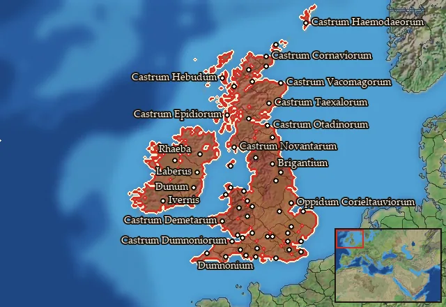

RTR: Imperium Surrectum
RTR: Imperium SurrectumBritannia
← all mercenary pools · wiki index
Mercenary pool: 3 units for hire in 55 regions.

Mercenaries
| Unit | Cost (dn) | Experience | At start | Most in pool | Added per turn | Who can hire | |
|---|---|---|---|---|---|---|---|
| Mercenary Brittonic Spearmen | 3,044 | 0 | 1 | 2 | 0.5422–1.0844 | Any faction | |
| Mercenary Brittonic Swordsmen | 2,588 | 0 | 1 | 2 | 0.6378–1.2755 | Any faction | |
| Mercenary Brittonic Skirmishers | 2,827 | 0 | 1 | 2 | 0.5838–1.1677 | Any faction |
Regions (55)
Brigantia · Brigantia Centralis · Brigantia Orientalis · Caledonia · Cantiacia · Cantiacia Orientalis · Carnonacaea-Ceronia · Catuvellaunia · Catuvellaunia Occidentalis · Catuvellaunia Orientalis · Corieltauvia · Corieltauvia Orientalis · Cornavia · Cornovia · Cornovia Meridionalis · Damnonia · Deceanglia · Demetaea · Dobunnia · Dobunnia Meridionalis · Dumnonia · Dumnonia Meridionalis · Dumnonia Occidentalis · Durotrigia · Durotrigia Centralis · Durotrigia Occidentalis · Durotrigia Orientalis · Ecenia · Epidia · Haemodae · Hebudes · Ituna Aestuarium · Ivernia Centralis · Ivernia Meridionalis · Ivernia Occidentalis · Ivernia Orientalis · Ivernia Septentrionalis · Lugia-Decantaea · Mona · Monaodea · Novantaea-Selgovaea · Orcades · Ordovicia · Ordovicia Meridionalis · Otadinia · Otadinia Septentrionalis · Reginia · Reginia Septentrionalis · Siluria · Siluria Orientalis · Smertaea-Caerenia · Taexalia · Trinobantia · Trinobantia Orientalis · Vacomagia